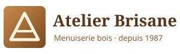
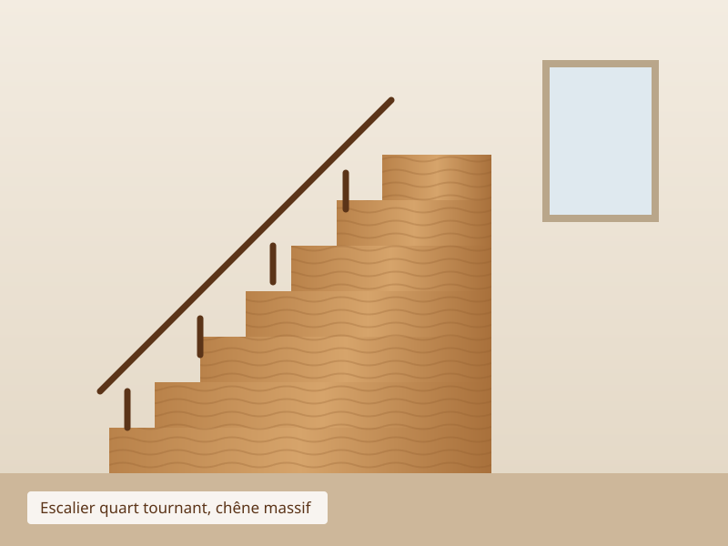
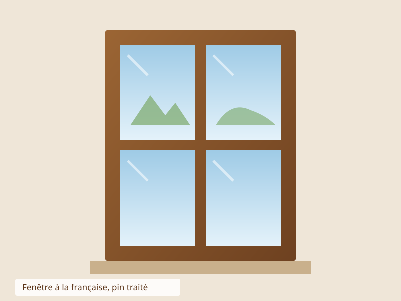
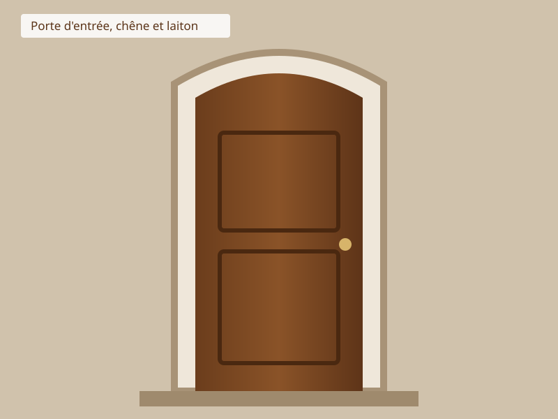
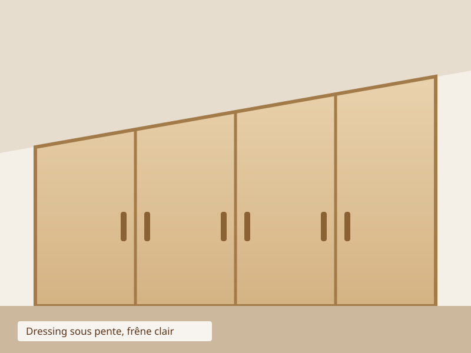
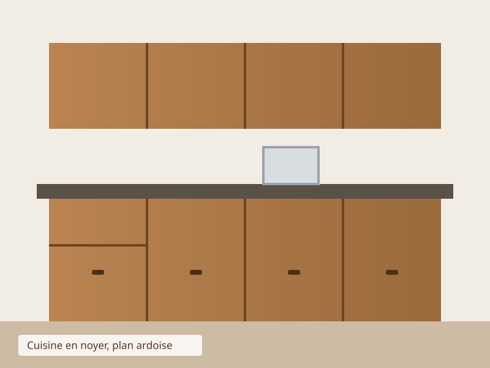
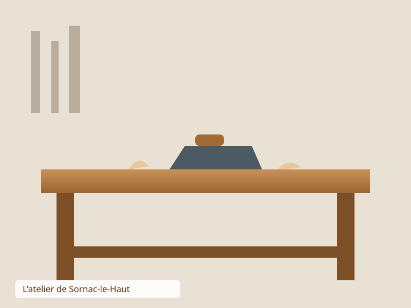

Cliquez sur une image pour l'agrandir (Javascript doit être activé).






Escalier quart tournant (chêne, 2010) · Fenêtres (pin, 2010) · Porte d'entrée (chêne et laiton, 2009) · Dressing sous pente (frêne, 2011) · Cuisine (noyer, plan ardoise, 2011).